NONMEM Users Guide Part VII - Conditional Estimation Methods - Chapter I
I. Introduction
NONMEM Users Guide Part VII - Conditional Estimation Methods - Chapter I
I. Introduction
This document gives a brief
description of the estimation methods for population type
data that can be used with NONMEM Version V. These include,
in particular, a few methods that are new with this version,
the centered and hybrid methods. The more important changes
from the earlier edition published in 1992, but not all
changes, are highlighted with the use of vertical bars in
the right margin. This document contains no information
about how to communicate with the NONMEM program.
To read this document it may be
helpful to have some familiarity with the notation used with
the representation of statistical models for the NONMEM
program. See discussions of models in NONMEM Users Guide -
Part I, but if one’s interest is only in using NONMEM
with PREDPP, see discussions of models in NONMEM Users
Guides - Parts V and VI. Particular notation used in this
Guide VII is given next.
The jth observation from the ith
individual is denoted
. Each individual may have a different number of
observations. Each observation may be measured on a
different scale: continuous, categorical, ordered
categorical, discrete-ordinal.†
----------
† This document
provides a description of estimation methods that can be
used with observations of the same or different type.
However, essentially, it neither contains any specific
information about how to analyze observations of particular
types, nor any information about how to communicate with
NONMEM in order to do this.
----------
An individual can have
multivariate observations, each of different lengths.
However, the multivariate nature of an observation is
suppressed, as this is not relevant to the descriptions
given in this document, and so the separate (scalar-valued)
observations comprising the multivariate observations are
all separately indexed by j. Each multivariate observation
may have a different length. The vector of all the
observations from the ith individual is denoted
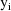
.
It is assumed that there exists
a separate statistical model for each
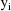
. This model is called the intraindividual model or
the individual model for the ith individual. It is
parameterized by
 , a (vector-valued) parameter common to all the separate
intraindividual models, and
, a (vector-valued) parameter common to all the separate
intraindividual models, and
 , a (vector-valued) parameter specific to the
intraindividual model for
, a (vector-valued) parameter specific to the
intraindividual model for
 . Under this model, the likelihood of
. Under this model, the likelihood of
 for the data
for the data
 (conditional on
(conditional on
 ) is denoted by
, the dependence on
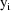
being supressed in the notation. This likelihood is called
here the conditional likelihood of
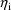
) is denoted by
, the dependence on
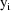
being supressed in the notation. This likelihood is called
here the conditional likelihood of
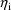
When all the elements of
 are measured on a continuous scale, an often-used
intraindividual model is given by the multivariate normal
model with mean
and variance-covariance matrix
(usually,
are measured on a continuous scale, an often-used
intraindividual model is given by the multivariate normal
model with mean
and variance-covariance matrix
(usually,
 is comprised of parameters
is comprised of parameters
 which are the only ones affecting
, and other parameters which, along with
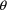
, affect
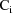
).††
which are the only ones affecting
, and other parameters which, along with
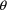
, affect
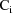
).††
----------
†† Here and
elsewhere in this section an explicit assumption concerning
the normal probablility distribution is made. This is done
primarily to keep the discussion simple. To various degrees
in different situations the normality assumption does not
play as important a role as our formally making the
assumption might indicate.
----------
This type of model shall be
referred to as the mean-variance model It is usually
expressed in terms of a multivariate normal vector
with mean 0 and variance-covariance matrix
 . In the notation used here, the parameter
. In the notation used here, the parameter
 includes
includes
 (ignoring the matrix structure of
(ignoring the matrix structure of
 ). For example,
). For example,
where
is an instance of a univariate normal variable
with variance
. (When
is multivariate, the observation
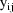
is modeled in terms of a single instance of this
multivariate random vector. A few other observations as well
may be modeled in terms of this same instance, and
thus under the model, all such observations are correlated
and comprise a multivariate observation.) In this example,
is
(the mean of
), and
is
(the variance of
 ). Since the ratio of the standard deviation of
). Since the ratio of the standard deviation of
 to the mean of
is the constant
, this particular model is called the constant coefficient
of variation model.
to the mean of
is the constant
, this particular model is called the constant coefficient
of variation model.
The dependence of
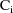
on
 is often a consequence of the intraindividual variance
depending on the mean function, as with the above example,
which in turn depends on
is often a consequence of the intraindividual variance
depending on the mean function, as with the above example,
which in turn depends on
 . This dependence represents an interaction between
. This dependence represents an interaction between
 and
. With the (homoscedastic) model expressed by
and
. With the (homoscedastic) model expressed by
there is no such interaction;
is just
 . There are two variants of the first-order conditional
estimation method described in chapter II, one that takes
this interaction into account and another that ignores
it.
. There are two variants of the first-order conditional
estimation method described in chapter II, one that takes
this interaction into account and another that ignores
it.
When an intraindividual model
involving
is presented to NM-TRAN (the "front-end" of the
NONMEM system), the model is automatically transformed. A
linearization of the right side of the equation is used: a
first-order approximation in
 about 0, the mean value of
about 0, the mean value of
 . Since the approximate model is linear in
, it is a mean-variance model. Clearly, if the given model
is itself a mean-variance model, the transformed model is
identical to the given model. Consider, for example, an
intraindividual model where the elements of
are regarded as lognormally distributed (because the
normally distributed
appear as logarithms):
. Since the approximate model is linear in
, it is a mean-variance model. Clearly, if the given model
is itself a mean-variance model, the transformed model is
identical to the given model. Consider, for example, an
intraindividual model where the elements of
are regarded as lognormally distributed (because the
normally distributed
appear as logarithms):
In this case the transformed
model is the constant cv model given above. (Therefore, no
matter whether the given intraindividual model or the
constant cv model is presented to NM-TRAN, the results of
the analysis will be the same.)
Alternatively, the user might be
able to transform the data so that a mean-variance model
applies to the transformed data, which can then be presented
directly to NM-TRAN. With the above example, and using the
log transformation on the data
, an appropriate mean-variance model to present to NM-TRAN
would be
(Actually, NM-TRAN allows one to
explicitly accomplish the log transformation of both the
data and the
.) The results of the analysis differ depending on whether
or not the log transformation is used. Without the log
transformation, the values of the
are regarded as arithmetic means (under the approximate
model obtained by linearizing), and with the log
transformation, these values are regarded as geometric
means. Use of the log transformation (when this can be done;
when there are no
or
 with value 0) can often lead to a better analysis.
with value 0) can often lead to a better analysis.
It is also assumed that as
individuals are sampled randomly from the population, the
are also being sampled randomly (and statistically
independently), although these values are not observable.
The value
is called the random interindividual effect for
 . It is assumed that the
. It is assumed that the
 are instances of the random vector
are instances of the random vector
 , normally distributed with mean 0 and variance-covariance
matrix
, normally distributed with mean 0 and variance-covariance
matrix
 . The density function of this distribution (at
. The density function of this distribution (at
 ) is denoted by
.
) is denoted by
.
Often, some quantity P (viewed
as a function of values of the covariates and the
 ) is common to different intraindividual models. For
example, a clearance parameter may be common to different
intraindividual models, but its value differs between
different intraindividual models because the values of the
covariates and the
) is common to different intraindividual models. For
example, a clearance parameter may be common to different
intraindividual models, but its value differs between
different intraindividual models because the values of the
covariates and the
 differ. The randomness of the
in the population induces randomness in P. The quantity P is
said to be a randomly dispersed parameter When
speaking of its distribution, we are imagining that the
values of the covariates are fixed, so that indeed, there is
a unique distribution in question.
differ. The randomness of the
in the population induces randomness in P. The quantity P is
said to be a randomly dispersed parameter When
speaking of its distribution, we are imagining that the
values of the covariates are fixed, so that indeed, there is
a unique distribution in question.
From the above assumptions, the
(marginal) likelihood of
 and
and
 for the data
for the data
 is given by
is given by
In general, this integral is
difficult to compute exactly. The likelihood for all the
data is given by
The first-order estimation
method was the first population estimation method available
with NONMEM. This method produces estimates of the
population parameters
 and
and
 , but it does not produce estimates of the random
interindividual effects. An estimate of
, but it does not produce estimates of the random
interindividual effects. An estimate of
 is nonetheless obtainable, conditional on the first-order
estimates for
and
is nonetheless obtainable, conditional on the first-order
estimates for
and
 (or on any other values for these parameters), by maximizing
the empirical Bayes posterior density of
(or on any other values for these parameters), by maximizing
the empirical Bayes posterior density of
 , given
, given
 :
, with respect to
:
, with respect to
 . In other words, the estimate is the mode of the posterior
distribution. Since this estimate is obtained after values
for
. In other words, the estimate is the mode of the posterior
distribution. Since this estimate is obtained after values
for
 and
and
 are obtained, it is called the posthoc estimate When
a mean-variance model is used, and a request is put to
NONMEM to compute a posthoc estimate, by default this
estimate is computed using
. In other words, the intraindividual variance-covariance is
assumed to be the same as that for the mean
individual the hypothetical individual having the mean
interindividual effect, 0, and sharing the same values of
the covariates as has the ith individual). However, it is
also possible to obtain the posterior mode without this
assumption.
are obtained, it is called the posthoc estimate When
a mean-variance model is used, and a request is put to
NONMEM to compute a posthoc estimate, by default this
estimate is computed using
. In other words, the intraindividual variance-covariance is
assumed to be the same as that for the mean
individual the hypothetical individual having the mean
interindividual effect, 0, and sharing the same values of
the covariates as has the ith individual). However, it is
also possible to obtain the posterior mode without this
assumption.
The posterior density can be
maximized using any given values for
 and
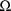
. Since the resulting estimate for
is obtained conditionally on these values, it is sometimes
called a conditional estimate at these values, to
emphasize its conditional nature.
and
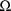
. Since the resulting estimate for
is obtained conditionally on these values, it is sometimes
called a conditional estimate at these values, to
emphasize its conditional nature.
In contrast with the first-order
method, the conditional estimation methods to be described
produce estimates of the population parameters and,
simultaneously, estimates of the random
interindividual effects. With each different method, a
different approximation to the likelihood function (1) is
used, and (2) is maximized with respect to
 and
and
 . The approximation to (1) at the values
and
. The approximation to (1) at the values
and
 depends on an estimate
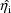
, and as this estimate itself depends on the values
and
depends on an estimate
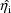
, and as this estimate itself depends on the values
and
 , the approximation gives rise to a further dependence of
on the values of
, the approximation gives rise to a further dependence of
on the values of
 and
and
 , one not expressed in (1). Consequently, as different
values
, one not expressed in (1). Consequently, as different
values
 and
and
 are tried, different estimates
are obtained as a part of the maximization of (2).
The estimates
at the values
are tried, different estimates
are obtained as a part of the maximization of (2).
The estimates
at the values
 and
and
 that maximize (2) constitute the estimates of the random
interindividual effects produced by the method (except
for the hybrid method†). The estimate
also depends on
that maximize (2) constitute the estimates of the random
interindividual effects produced by the method (except
for the hybrid method†). The estimate
also depends on
 , and so, the approximation gives rise to a further
dependence of
, and so, the approximation gives rise to a further
dependence of
 on
on
 , one also not expressed in (1).
, one also not expressed in (1).
----------
† After obtaining
the population parameter estimates with the hybrid method
(see chapter II), NONMEM ignores the estimates of the
 that have been produced simultaneously with the population
parameter estimates, and as with the first-order method, the
posthoc estimates (described above) are the ones reported as
the estimates of the random interindividual effects.
that have been produced simultaneously with the population
parameter estimates, and as with the first-order method, the
posthoc estimates (described above) are the ones reported as
the estimates of the random interindividual effects.
----------
In contrast with the first-order
method, a conditional estimation method involves multiple
maximizations within a maximization. The estimate
is the value of
 that maximizes the posterior distribution of
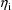
given
that maximizes the posterior distribution of
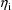
given
 (except for the hybrid method††). For each
different value of
(except for the hybrid method††). For each
different value of
 and
and
 that is tried by the maximization algorithm used to maximize
(2), first a value
is found that maximizes the posterior distribution given
, then a value
is found that maximizes the posterior distribution given
, etc. Therefore, maximizing (2) is a very difficult and CPU
intensive task. The numerical methods by which this is
accomplished are not described in this document.
that is tried by the maximization algorithm used to maximize
(2), first a value
is found that maximizes the posterior distribution given
, then a value
is found that maximizes the posterior distribution given
, etc. Therefore, maximizing (2) is a very difficult and CPU
intensive task. The numerical methods by which this is
accomplished are not described in this document.
----------
†† With the
hybrid method, a constrained maximum is computed.
----------
Fortunately, it often suffices
to use the first-order method; a conditional estimation
method is not needed, or if it is, sometimes it is needed
only minimally during the course of a data analysis. Some
guidance is given in chapter III. Briefly, the need for a
conditional estimation method increases with the degree to
which the intraindividual models are nonlinear in the
 . Population pharmacokinetic models are often actually
rather linear in this respect, although the degree of
nonlinearity increases with the degree of multiple dosing.
Population pharmacodynamic models are more nonlinear. The
potential for a conditional estimation method to produce
results different from those obtained with the first-order
estimation method decreases as the amount of data per
individual decreases, since a conditional estimation method
uses conditional estimates of the
. Population pharmacokinetic models are often actually
rather linear in this respect, although the degree of
nonlinearity increases with the degree of multiple dosing.
Population pharmacodynamic models are more nonlinear. The
potential for a conditional estimation method to produce
results different from those obtained with the first-order
estimation method decreases as the amount of data per
individual decreases, since a conditional estimation method
uses conditional estimates of the
 , which are all shrunken to 0, and the shrinkage is greater
the less the amount of data per individual. Many population
analyses involve little amounts of data per individual.
, which are all shrunken to 0, and the shrinkage is greater
the less the amount of data per individual. Many population
analyses involve little amounts of data per individual.
The conditional estimation
methods that are available with NONMEM and which are
described in chapter II are: the first-order conditional
estimation method (with and without interaction when
mean-variance models are used, and with or without
centering), the Laplacian method (with and without
centering), and the hybrid method (a hybrid between the
first-order and first-order conditional estimation methods).
For purposes of description here and in other NONMEM Users
Guides, the term
conditional estimation
methods refers not only to these population estimation
methods, but also to methods for obtaining conditional
estimates themselves.
To summarize, each of the
(population) conditional estimation methods involves
maximizing (2), but each uses a different approximation to
(1). Actually,
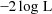
is minimized with respect to
 and
and
 . This is called the objective function Its minimum
value serves as a useful statistic for comparing models.
Standard errors for the estimates (indeed, an estimated
asymptotic variance-covariance matrix for all the estimates)
is obtained by computing derivatives of the objective
function.
. This is called the objective function Its minimum
value serves as a useful statistic for comparing models.
Standard errors for the estimates (indeed, an estimated
asymptotic variance-covariance matrix for all the estimates)
is obtained by computing derivatives of the objective
function.
TOP
TABLE OF CONTENTS
NEXT CHAPTER ...